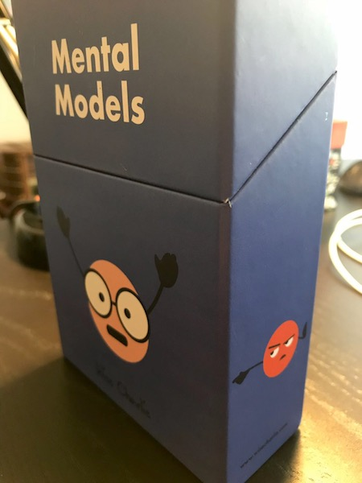
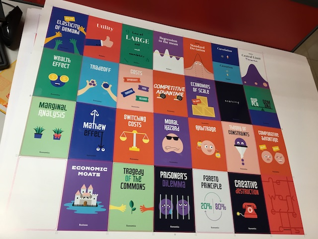
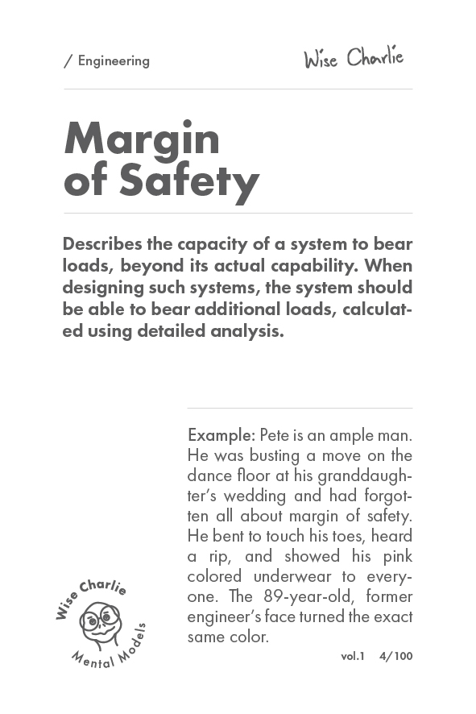

Story: Charlie Munger has been a huge source of inspiration to me since I was a teenager. He is Warren Buffett's business partner at Berkshire Hathaway and famously known as one of the broadest thinkers. The concept of mental models was coined by Munger. Mental models are big ideas from big disciplines which can help one think constructively in a multi-disciplinary approach. These mental models can help anyone ask the right questions by thinking critically. It is easy to pay homage to Charlie Munger’s latticework of mental models, but when you live it, you see why he is right. Knowing the key drivers and major ideas in a variety of fields is a huge source of leverage. It is difficult to study broadly and deeply, but the two aren't mutually exclusive. I wanted to create a central repository of these mental models which would explain them in a fun way.
Product: Wise Charlie is a collection of 100 mental model cards packaged in a beautiful and compact box. It is a pocket tool for a mind. Each model has fun artwork with a short defintion followed by a funny example. I wanted the product to reflect humor because Charlie Munger in real life is hilarious.
Product packaging.
Artwork for mental model cards.
Example of a mental model.
Results: The project has been a challenge in many ways that I did not anticipate. Manufacturing a physical product is still very hard especially when you are not willing to sacrifice design and quality for your product. After successful prototyping and production, Wise Charlie is healthy and work in progress.
Instagram: @heywisecharlie
Website: www.wisecharlie.com